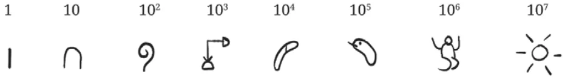
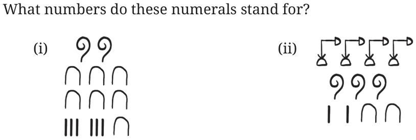
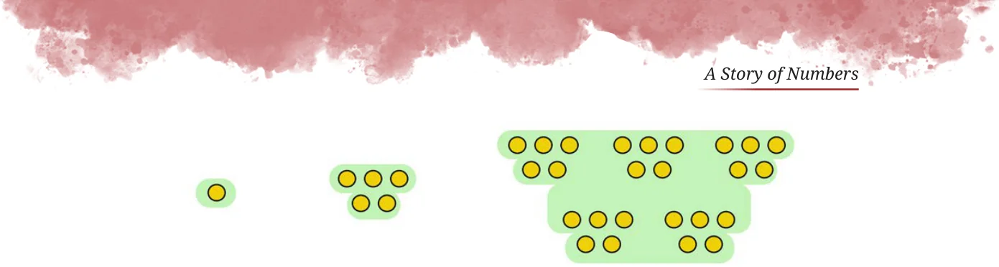
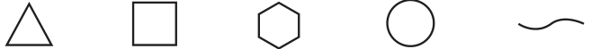

<!DOCTYPE html>
<html lang="en">
<head>
<meta charset="UTF-8">
<meta name="viewport" content="width=device-width,initial-scale=1">
<title>Base — A Story of Numbers</title>
<meta name="description" content="Class 8 Mathematics · Part 1 · A Story of Numbers · Base">
<link rel="icon" href="data:image/svg+xml,<svg xmlns='http://www.w3.org/2000/svg' viewBox='0 0 100 100'><text y='.9em' font-size='90'>📘</text></svg>">
<link rel="stylesheet" href="../../../assets/book.css">
<link rel="stylesheet" href="https://cdn.jsdelivr.net/npm/katex@0.16.11/dist/katex.min.css" crossorigin="anonymous">
</head>
<body>
<header class="topbar">
<div class="topbar-in">
  <div class="crumb">
    <span class="c1"><a href="../../../index.html">Library</a> · <a href="../../index.html">Class 8 Mathematics · Part 1</a></span>
    <span class="c2">A Story of Numbers · Base</span>
  </div>
  <a class="tb-btn" data-nav="prev" href="../../03-a-story-of-numbers/11-figure-it-out/index.html" title="Figure it Out">←</a>
  <details class="drawer"><summary class="tb-btn" title="Sections in this chapter">☰</summary>
<div class="drawer-panel"><div class="dh">A Story of Numbers</div><a href="../01-reema-s-curiosity-3.1/index.html">3.1 Reema’s Curiosity</a><a href="../02-the-mechanism-of-counting/index.html">The Mechanism of Counting</a><a href="../03-figure-it-out/index.html">Figure it Out</a><a href="../04-some-early-number-systems-3.2/index.html">3.2 Some Early Number Systems; I. Use of Body Parts</a><a href="../05-ii-tally-marks-on-bones-and-other-surfaces/index.html">II. Tally Marks on Bones and Other Surfaces</a><a href="../06-iii-number-names-obtained-by-counting-in-twos/index.html">III. Number Names Obtained by Counting in Twos</a><a href="../07-iv-the-roman-numerals/index.html">IV. The Roman Numerals</a><a href="../08-figure-it-out/index.html">Figure it Out</a><a href="../09-figure-it-out/index.html">Figure it Out</a><a href="../10-the-idea-of-a-base-3.3/index.html">3.3 The Idea of a Base; I. The Egyptian Number System</a><a href="../11-figure-it-out/index.html">Figure it Out</a><a href="../12-base/index.html" aria-current="page">Base</a><a href="../13-figure-it-out/index.html">Figure it Out</a><a href="../14-figure-it-out/index.html">Figure it Out</a><a href="../15-iii-shortcomings-of-the-egyptian-system/index.html">III. Shortcomings of the Egyptian System</a><a href="../16-figure-it-out/index.html">Figure it Out</a><a href="../17-place-value-representation-3.4/index.html">3.4 Place Value Representation; I. The Mesopotamian Number System</a><a href="../18-figure-it-out/index.html">Figure it Out</a><a href="../19-ii-the-mayan-number-system/index.html">II. The Mayan Number System</a><a href="../20-iii-the-chinese-number-system/index.html">III. The Chinese Number System</a><a href="../21-iv-the-hindu-number-system/index.html">IV. The Hindu Number System</a><a href="../22-a-numeral-375/index.html">A numeral 375</a><a href="../23-figure-it-out/index.html">Figure it Out</a><a href="../24-summary/index.html">SUMMARY</a><a href="../25-figure-it-out/index.html">Figure it Out</a><a href="../26-figure-it-out/index.html">Figure it Out</a><a href="../27-figure-it-out/index.html">Figure it Out</a><a href="../28-figure-it-out/index.html">Figure it Out</a><a href="../29-figure-it-out/index.html">Figure it Out</a><a href="../30-figure-it-out/index.html">Figure it Out</a><a href="../31-figure-it-out/index.html">Figure it Out</a><a href="../32-figure-it-out/index.html">Figure it Out</a><a href="../33-figure-it-out/index.html">Figure it Out</a></div></details>
  <a class="tb-btn" data-nav="next" href="../../03-a-story-of-numbers/13-figure-it-out/index.html" title="Figure it Out">→</a>
  <button class="tb-btn" data-theme-toggle title="Toggle light / dark" aria-label="Toggle light or dark theme">◐</button>
</div>
<div class="progress"><span style="width:32.4%"></span></div>
</header>
<main class="wrap">
<div class="sec-head">
  <p class="eyebrow"><a href="../index.html">Chapter 3 · A Story of Numbers</a></p>
  <h1>Base</h1>
  <p class="sec-meta">Textbook pages 15–16 · 8 figures</p>
</div>
<article class="prose">
<figure class="fig wide"></figure>
<p>Each landmark number is 10 times the previous one. Since 1 is the first landmark number, they are all powers of 10. The following are the symbols given to these numbers -</p>
<figure class="fig wide"></figure>
<p>As in the case of Roman numbers, a given number is counted in groups of the landmark numbers, starting from the largest landmark number</p>
<p>For example 324 which equals \(100 + 100 + 100 + 10 + 10 + 4\) is written</p>
<figure class="fig"></figure>
<ul class="qlist">
<li><span class="mk">1.</span><span class="lt">Represent the following numbers in the Egyptian system: 10458,</span></li>
</ul>
<p>1023, 2660, 784, 1111, 70707.</p>
<p>2.</p>
<figure class="fig wide"></figure>
<h2 id="s-ii-variations-on-the-egyptian-system-and-the-notion-of-bas">II. Variations on the Egyptian System and the Notion of Base</h2>
<p>Instead of grouping together 10 collections of size equal to the previous landmark number (as in the case of the Egyptian system), can we get a number system by grouping together 5 collections of size equal to the previous landmark number? Can this 5 be replaced by any positive integer? Let us examine this possibility. Let 1 be the first landmark number. Group together 5 collections of size equal to the previous landmark number (1). Its size is the second landmark number which is 5. Group together 5 collections of size equal to the previous landmark number (5). Its size is the third landmark number which is \(5 \times 5 = 25\). Group together 5 collections of size equal to the previous landmark number (5). Its size is the fourth landmark number which is \(5 \times 25 = 125\).</p>
<figure class="fig wide"></figure>
<figure class="fig wide"></figure>
<p>Thus, we have a new number system where each landmark number is 5 times the previous one. Since 1 is the first landmark number, they are all powers of 5.</p>
<div class="mathblock"><p>\(5 = 1 5 = 5 5 = 25 5 = 125 5 = 625 5 = 3125\)</p></div>
<figure class="fig"></figure>
<p>Express the number 143 in this new system.</p>
<p>Let us start grouping, starting with the size \(5 = 125\), as this is the largest landmark number smaller than 143. We get -</p>
<div class="mathblock"><p>\(143 = 125 + 5 + 5 + 5 + 1 + 1 + 1\).</p></div>
<p>So the number 143 in the new system is . Number systems having landmark numbers in which the</p>
<ul class="qlist">
<li><span class="mk">(a)</span><span class="lt">first landmark number is 1, and</span></li>
<li><span class="mk">(b)</span><span class="lt">every next landmark number is obtained by multiplying the</span></li>
</ul>
<p>current landmark number by some fixed number n is said to be a base-n number system. The Egyptian number system is a base-10 system, and the number system that we created is a base-5 system. A base-10 number system is also called a decimal number system.</p>
</article>
<nav class="pager"><a class="" data-nav="prev" href="../../03-a-story-of-numbers/11-figure-it-out/index.html"><span class="dir">← Previous</span><span class="t">Figure it Out</span><span class="ch">A Story of Numbers</span></a><a class="nx" data-nav="next" href="../../03-a-story-of-numbers/13-figure-it-out/index.html"><span class="dir">Next →</span><span class="t">Figure it Out</span><span class="ch">A Story of Numbers</span></a></nav>
</main><footer class="site">Generated from the source textbook PDFs · text, figures and exercises belong to their respective publishers.</footer><script defer src="https://cdn.jsdelivr.net/npm/katex@0.16.11/dist/katex.min.js" crossorigin="anonymous"></script>
<script defer src="https://cdn.jsdelivr.net/npm/katex@0.16.11/dist/contrib/auto-render.min.js" crossorigin="anonymous"
  onload="renderMathInElement(document.body,{delimiters:[
    {left:'\\(',right:'\\)',display:false},
    {left:'$$',right:'$$',display:true},
    {left:'\\[',right:'\\]',display:true}],throwOnError:false,ignoredTags:['script','noscript','style','textarea','pre','code']})"></script>
<script src="../../../assets/book.js"></script>
<script defer src="../../../../assets/search.js?v=1789782769"></script>
<script defer src="../../../../assets/screenshot.js?v=1789782769"></script>
</body>
</html>
